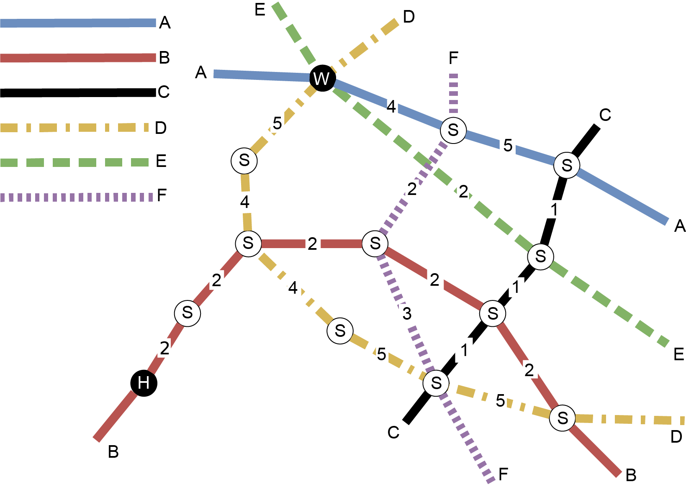
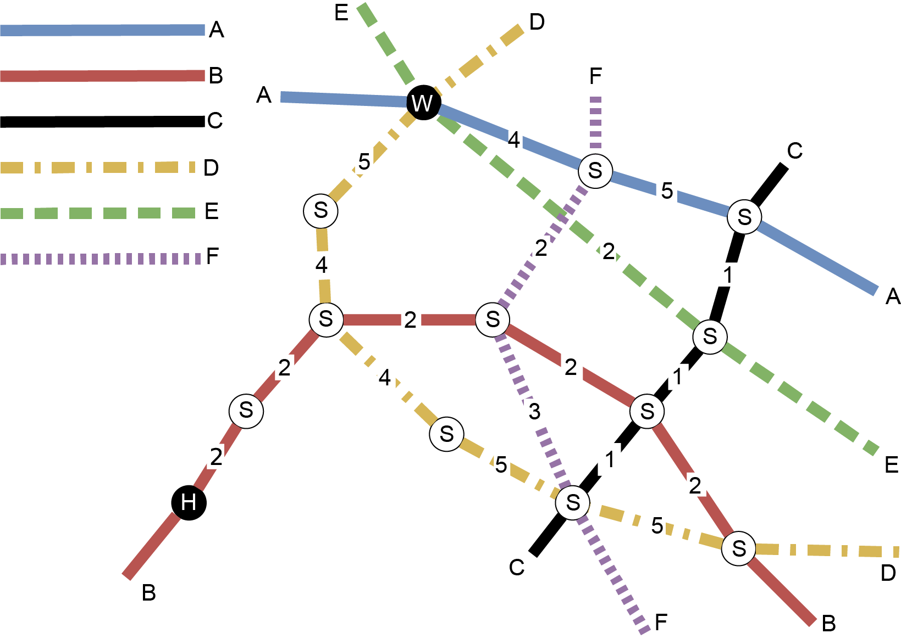

通勤上班
海狸小娜每天都搭捷運去上班，她家到公司沒有直達的捷運線，必須轉換好幾條路線。 下列地圖顯示捷運的六條路線，其中:
- 小娜家所在的捷運站標識為“H”
- 公司所在的捷運站標識為“W”
- 可以轉搭其他路線的捷運站標識為“S“
- 兩站間的“數字” 代表站與站之間的行車時間

假設不同路線間轉搭的時間可以忽略，哪一條路線可以讓小娜從她家最快到達公司?
海狸小娜每天都搭捷運去上班，她家到公司沒有直達的捷運線，必須轉換好幾條路線。 下列地圖顯示捷運的六條路線，其中:

假設不同路線間轉搭的時間可以忽略，哪一條路線可以讓小娜從她家最快到達公司?